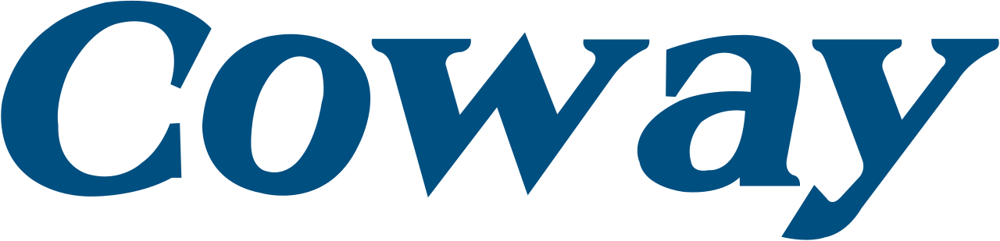
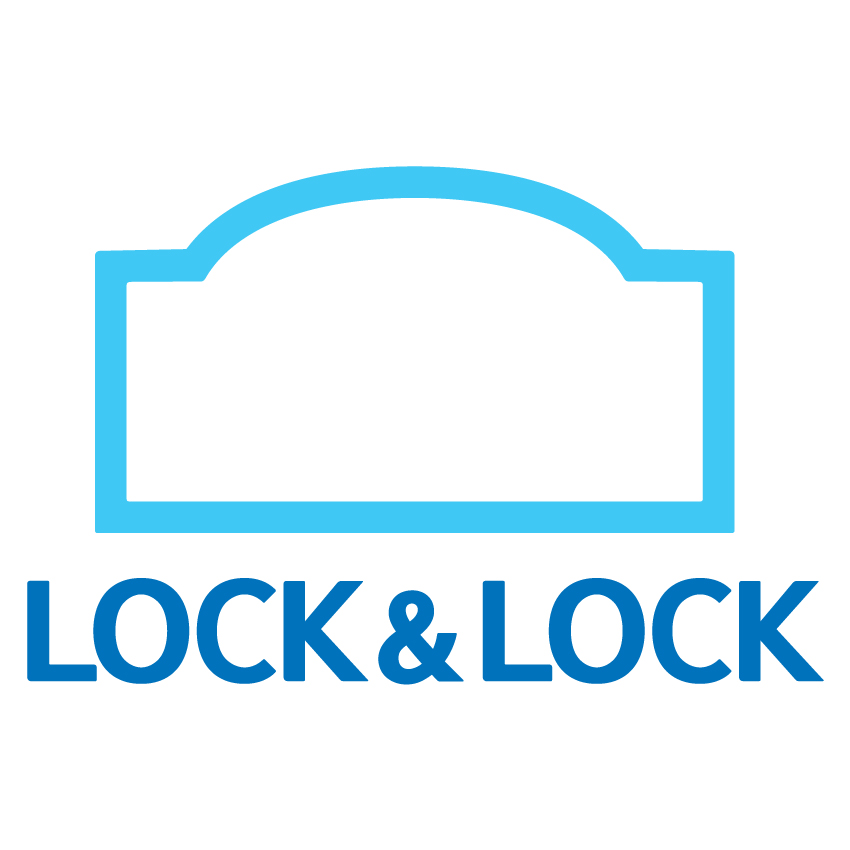

홈 > 브랜드 매거진 > 청호나이스
청호나이스 Cheongho Nais
청호나이스(Cheongho Nais)는 정수기를 주력으로 하는 대한민국의 생활가전 렌탈 기업이다.
산업 분야 홈·라이프스타일 · 공개 등급 자료 기반 · 브랜드 평가 4 ★
한눈에 보는 브랜드
청호나이스는 1993년 정휘동이 청호인터내셔날(이후 청호정밀·청호나이스 법인)로 출발시킨 한국의 정수기·생활가전 렌탈 기업으로, 맑은 호수를 뜻하는 청호(淸湖)라는 이름처럼 깨끗한 물을 핵심 가치로 삼는다. 첫 전환점은 2003년 세계 최초로 선보인 얼음정수기 아이스콤보, 두 번째는 2006년 하나의 증발기로 제빙과 냉수를 동시에 구현한 특허 제빙기술의 이과수 얼음정수기로, 기술 중심 1세대 렌탈 기업의 위상을 굳혔다.
연매출은 1999년 237억원에서 2024년 5,103억원으로 성장해 처음으로 5천억원대를 넘어섰다.
브랜드 관점
청호나이스의 가장 큰 차별점은 세계 최초 얼음정수기 개발사라는 기술 원조성이다. 코웨이가 회원 규모로 시장을 장악하는 동안, 청호나이스는 0.0001마이크로미터급 분리막의 역삼투압(RO) 정수 방식과 단일 증발기로 얼음·냉수를 동시 생산하는 특허 제빙기술로 프리미엄 정수 영역에서 정체성을 세웠다.
시장 점유율은 약 10%로 코웨이(약 40%), LG, SK매직, 쿠쿠에 이은 후발 추격군에 속하지만, 약 2,500명 규모의 방문 관리 플래너 조직과 약 168만 렌탈 계정을 기반으로 정기 관리형 사업을 운영한다. 전략적으로는 정수기 단일 품목을 넘어 공기청정기·비데·매트리스로 품목을 넓히고 어린이집·교육기관 등 B2B 렌탈을 확대해 라이프케어 플랫폼으로 외연을 키우는 방향이다.
한국 독자에게 청호나이스는 '얼음정수기 하면 청호'라는 기술 각인과, 대기업 자금력에 맞서 살아남은 중견 렌탈 기업의 자존심으로 읽힌다.
시작과 성장
1980~90년대 한국은 수돗물 불신과 위생 수요가 커지며 정수기 시장이 태동하던 시기였다. 한양대 공대를 나와 미국에서 경영학 석사와 공학박사를 취득하고 환경·정수 분야 엔지니어로 경력을 쌓은 정휘동은 1993년 서울에서 청호인터내셔날을 세우고, 같은 해 청호정밀, 1994년 청호나이스 법인을 잇따라 설립하며 정수 사업의 토대를 닦았다.
첫 전환점은 2003년 세계 최초 얼음정수기 아이스콤보 출시로, 단순 정수를 넘어 제빙이라는 새 범주를 열었다. 두 번째 전환점은 2006년 이과수 얼음정수기로, 하나의 증발기로 제빙과 냉수를 동시에 얻는 특허 기술을 적용해 기술 리더십을 공고히 했다.
이후 공기청정기·비데·매트리스 등으로 품목을 확장하고 RO멤브레인 필터를 약 42개국에 수출하는 계열사 마이크로필터를 통해 핵심 부품 경쟁력까지 내재화하며 종합 생활가전 렌탈 기업으로 성장했다.
브랜드 아이덴티티
청호나이스의 핵심 가치는 깨끗한 물과 맑은 공기, 그리고 '최고의 기술이 최초의 제품을 만든다(The Best can be the First)'는 기술 자부심이다. '순수함의 창조자', '청호 스탠다드, 글로벌 스탠다드'라는 메시지로 정밀한 정수 기술과 글로벌 품질 기준을 표방한다.
비주얼 아이덴티티는 깨끗한 물과 공기를 형상화한 심벌에 청호 블루와 네오민트 컬러를 적용해 환경친화적이고 생동감 있는 인상을 준다. 주 타깃은 위생과 수질에 민감한 가정, 영유아 가구, 그리고 어린이집·교육기관 등 안전한 물·공기가 중요한 시설 고객이다.
브랜드 보이스는 기술 원조성과 신뢰를 강조하는 차분하고 전문적인 톤을 유지한다.
제품과 서비스
청호나이스가 취급하는 품목은 얼음정수기·냉온정수기·커피정수기 등 정수기 라인을 중심으로 공기청정기, 비데, 연수기, 제습기, 매트리스, 소파에 이르는 생활가전 전반이다. 핵심은 0.0001마이크로미터급 역삼투압(RO) 필터를 적용한 정수 제품군이다.
판매는 약 2,500명 규모의 방문 관리 플래너를 통한 정기 관리형 렌탈을 핵심 채널로 삼고, 공식 렌탈몰 등 온라인 직판과 어린이집·교육기관 대상 B2B 렌탈을 병행한다.
현재 상태
본사는 서울 서초구에 있으며, RO멤브레인·카본블록 등 핵심 필터를 약 42개국에 수출하는 마이크로필터를 계열사로 둔다. 국가는 대한민국.
지배구조는 창업주 정휘동 일가가 대부분 지분을 보유한 폐쇄적 구조였으나, 정휘동 회장이 2025년 별세한 뒤 상속세 부담 등으로 매각이 추진되어 사모펀드 칼라일이 약 1조원 규모로 지분을 인수하는 주식인수계약을 체결했다. 매출은 2024년 약 5,103억원이며, 정확한 총 임직원 수는 미공개.
타임라인
BI/CI 변천사
자주 묻는 질문
청호나이스는 어느 나라 브랜드인가요?
청호나이스는 한국의 홈·라이프스타일 브랜드입니다.
청호나이스의 브랜드 아이덴티티는 무엇인가요?
청호나이스의 핵심 가치는 깨끗한 물과 맑은 공기, 그리고 '최고의 기술이 최초의 제품을 만든다(The Best can be the First)'는 기술 자부심이다.
청호나이스의 대표 제품은 무엇인가요?
청호나이스가 취급하는 품목은 얼음정수기·냉온정수기·커피정수기 등 정수기 라인을 중심으로 공기청정기, 비데, 연수기, 제습기, 매트리스, 소파에 이르는 생활가전 전반이다.
청호나이스의 본사는 어디에 있나요?
본사는 서울 서초구에 있으며, RO멤브레인·카본블록 등 핵심 필터를 약 42개국에 수출하는 마이크로필터를 계열사로 둔다.
청호나이스의 공식 웹사이트는 어디인가요?
청호나이스의 공식 웹사이트는 https://www.chungho.co.kr/ 입니다.
함께 읽을 브랜드

홈·라이프스타일 · 자료 기반코웨이코웨이(Coway)는 정수기·공기청정기 등 환경가전을 렌탈·판매하는 대한민국의 생활가전 기업이다.
 홈·라이프스타일 · 자료 기반쿠쿠
홈·라이프스타일 · 자료 기반쿠쿠쿠쿠(CUCKOO)는 전기밥솥을 주력으로 하는 대한민국의 종합 생활가전 브랜드다.
홈·라이프스타일 · 자료 기반SK매직SK매직(SK Magic)은 SK네트웍스가 보유한 대한민국의 환경가전·렌탈 브랜드다.

홈·라이프스타일 · 자료 기반락앤락락앤락은 밀폐용기로 대표되는 한국의 생활용품 브랜드다. 네 면을 잠그는 결착 방식의 밀폐 기술로 주방 보관 문화를 바꾸며 성장했고, 밀폐용기를 기반으로 텀블러와 조리...
홈·라이프스타일 · 자료 기반모나미모나미는 볼펜을 비롯한 필기구를 중심으로 성장한 한국의 대표 문구 기업이다. 1963년 선보인 모나미 153 볼펜은 출시와 동시에 학생과 직장인에게 폭넓게 보급되며...
16
16th Street
홈·라이프스타일 · 편집 검수16th Street16th Street는 2025년에 기록된 Placemaking 계열의 브랜드 아이덴티티 사례입니다. DNCO가 아이덴티티 작업의 디자이너로 기록되어 있습니다. 공개...
70
70 Hudson Yards
홈·라이프스타일 · 편집 검수70 Hudson Yards70 Hudson Yards는 2025년에 기록된 Property 계열의 브랜드 아이덴티티 사례입니다. DNCO가 아이덴티티 작업의 디자이너로 기록되어 있습니다. 공...
Cu
Curve Club
홈·라이프스타일 · 편집 검수Curve ClubCurve Club는 2023년에 기록된 Property 계열의 브랜드 아이덴티티 사례입니다. Wildish & Co.가 아이덴티티 작업의 디자이너로 기록되어 있습니...